“The greatest tragedy in mankind’s entire history may be the hijacking of morality by religion.” —Arthur C. Clarke
💬

“If liberty means anything at all, it means the right to tell people what they do not want to hear.” —George Orwell
💬
My new Field Notes “National Parks” Series arrived.
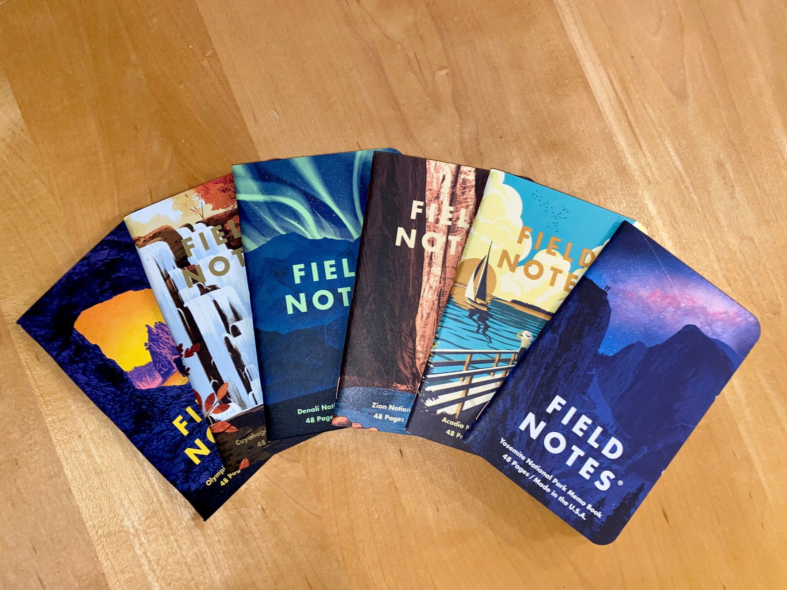
“The difference between misery and happiness depends on what we do with our attention.” —Sharon Salzberg
💬
The new album from Angel Olsen is an absolute stunner.
🎵
”If you’re losing your soul and you know it, then you’ve still got a soul left to lose.” —Charles Bukowski
💬
Nice to see the Gruhn Guitars mural underway again. 🎸
Smart people learn from everything and everyone, average people from their experiences, stupid people already have all the answers.
—Socrates
💬
You are under no obligation to remain the same person you were a year ago, a month ago, or even a day ago. You are here to create yourself, continuously.
—Richard Feynman
💬
A beautiful, new track from another artist I discovered this year, SYML: “The Dark”.
🎵
Released just three weeks ago, My Morning Jacket’s The Waterfall II is shaping up to be one of my favorite albums of the year.
The more I listen, the more nuance I pick up in the writing, melodies, rhythms, and engineering. So good.
🎵
Well, this blew my mind: macintosh.js.
This is Mac OS 8, running in an Electron app pretending to be a 1991 Macintosh Quadra. Yes, it’s the full thing. I’m sorry.
My second Mac was a Quadra 950, purchased in 1991. Twenty-nine years later, here’s an emulator of that beast of a machine running on my MacBook Pro.
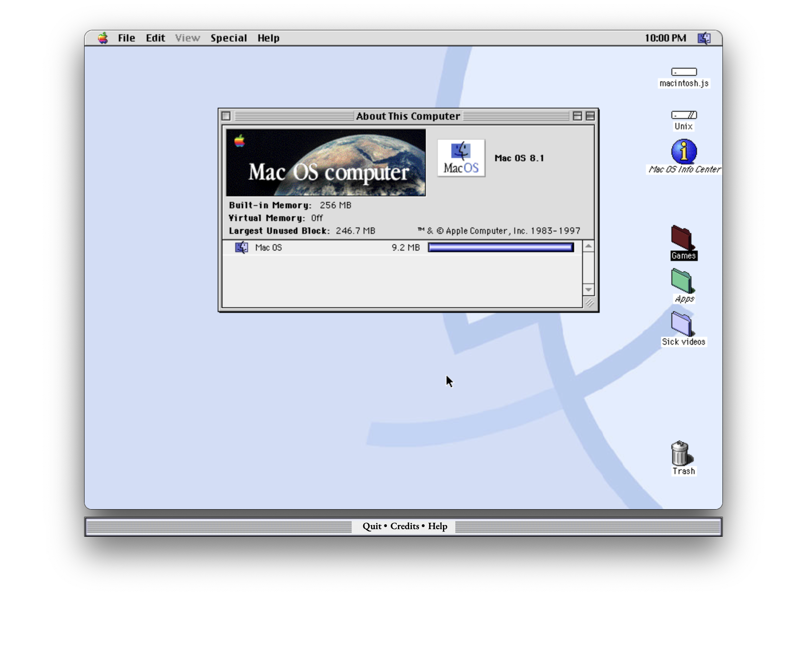
Want to read: True Names and The Openings of the Cyberspace Frontier by Vernor Vinge 📚
It’s Trade Coffee delivery day. Your darkest, you say? Challenge accepted. ☕️
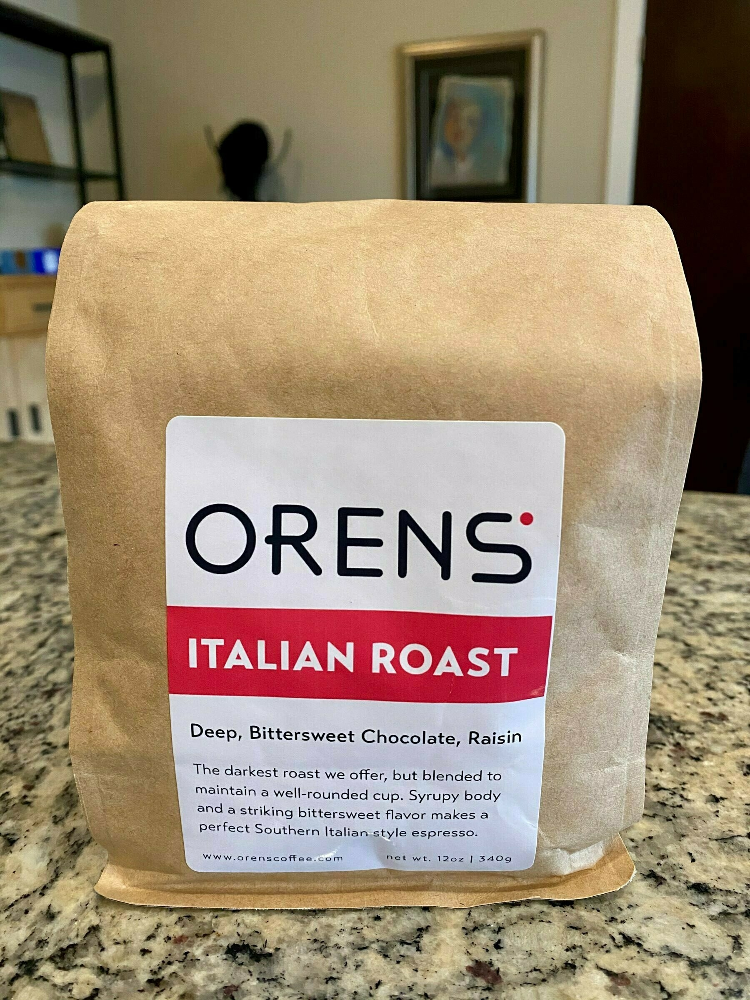
Make your own Bible. Select and collect all the words and sentences that in all your readings have been to you like the blast of a trumpet.
—Ralph Waldo Emerson
💬
Thus Buddhism may be summed up in two phrases: “Let go!” and “Walk on!” Drop the craving for self, for permanence, for particular circumstances, and go straight ahead with the movement of life.
—Alan Watts
💬
Shiny new kit assembled and running Umbrel Bitcoin and Lightning full node.
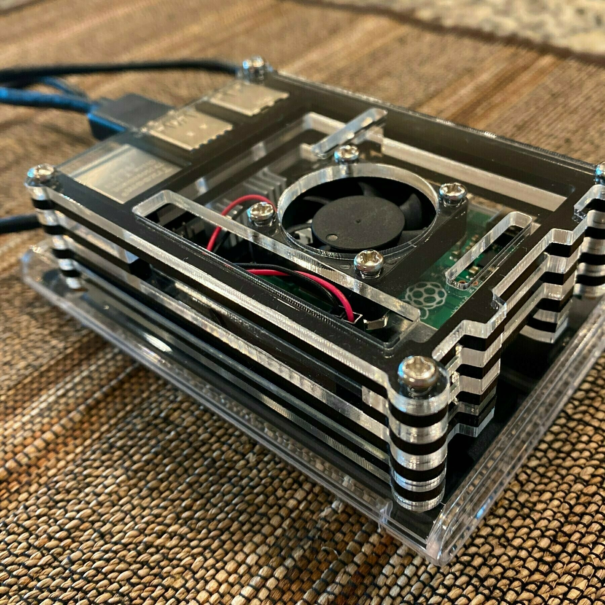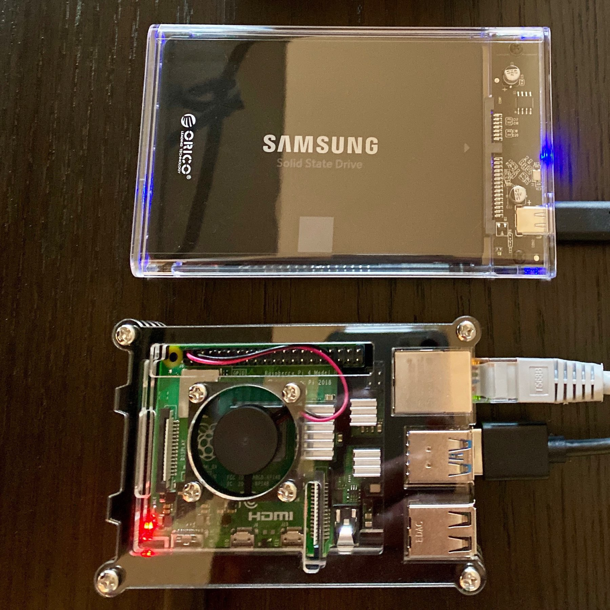
Today’s project: building a new node for testing Umbrel☂.
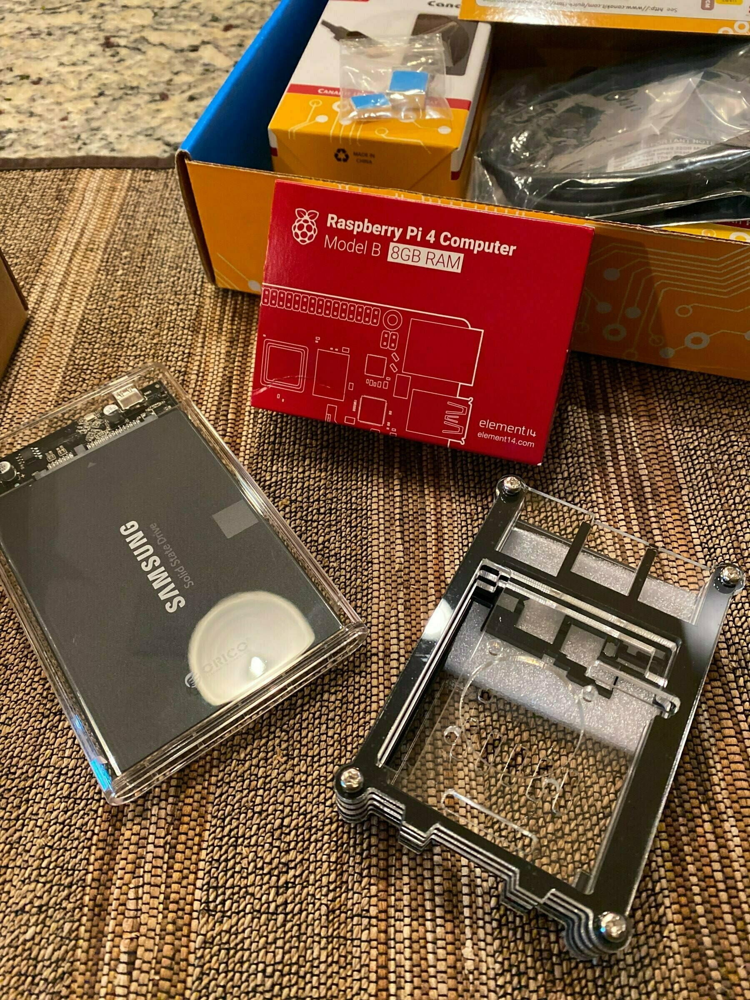
I miss live music.
Illiterate Light are one of my top new bands of 2020. They’ve just followed up their self-titled debut with a live EP. It makes for bitter-sweet listening.
Two of the new recordings were made here in Nashville, at indie venue Basement East. It was all but destroyed in March of this year by a tornado.
I miss live music. More than that, my heart goes out to all those in the arts struggling to make it through this pandemic.
🎵 My top pick for this #NewMusicFriday: “Wristwatch” by Husky, from their new prerelease album, Stardust Blues.
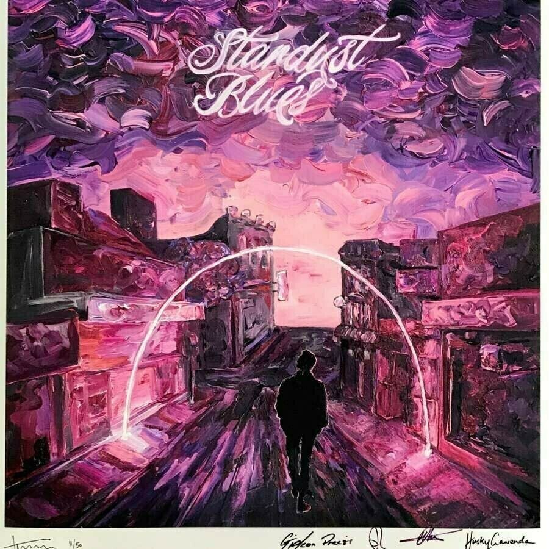
Yesterday’s unexpected Guns N’ Roses cover released by (presumably) the estate of Chris Cornell really grabbed me. I’m such a fan of his music. His loss was tragic.
🎵 “Patience” (Cover)
The Ritual of Morning Coffee
I love coffee. Good coffee. If I’m being honest, I’m a coffee snob.
Several years ago, my brother gave me the gift of pour-over coffee – all the gadgets needed to make my own amazing cup of coffee at home. A digital scale, a beautiful, Japanese hand grinder, a kettle, and a reusable cone filter. And a pound of Death Wish coffee beans. Life-changing.
More than the delicious cup of coffee that results from my efforts each morning, I love the ritual. I go from sleepily out of bed, to my meditation cushion, to my kitchen.
I fill the kettle with water and place it on the stove. I open the bag and smell the aromatic beans as I pour them into the grinder. I place a cup on the scale and the filter on the cup.
Then there’s something wonderful about the physicality of grinding the beans by hand. The smooth, monotonous motion. It’s meditative. I spoon the ground coffee into the filter and watch the scale until it reads the correct number of milligrams. I wait until the water boils and whistles.
Twenty seconds later, it’s reached the right temperature, and I use the small spout to cover the ground coffee until wet. Another twenty-second wait. Then I pour again until the scale reads the result of 6.5 (as I was taught) multiplied by the weight of coffee grounds. I remove the cup from the scale and the filter full of grounds from the cup.
Et voila! What, to me, is the perfect cup of pour-over coffee. No cream, no sugar. Pure, deep black joy in a cup. Fifteen minutes later, the caffeine if flowing through me, and all is right with the world.
🖊 ☕️
🎥 Ford v Ferrari was the feel good movie I was looking for on a relaxed day off. Bale and Damon are great together.
★★★★☆
🎵 The new single from Palace, “Someday, Somewhere,” is just right for a lazy Sunday.
What does it say about a people when they will not do the least to protect the most by wearing masks, but welcome commandos onto their streets to defend statues and buildings?
🎥 As a Philip K. Dick fan, I’d been meaning to watch The Adjustment Bureau for years. I stumbled across it tonight. Clever, touching, and beautifully filmed.
★★★★☆
Seems a shame that my zoom-mates won’t see my snazzy new #proofofsocks from MtSocks.
🎵 Massive Attack weigh in on universal basic income and the state of the world with a new track and short film. Whatever one’s views on UBI, it’s worth a watch and listen.
{kind=link}
☕️ My latest arrival from Trade Coffee: Onyx Coffee Lab’s Eclipse. Love the packaging.
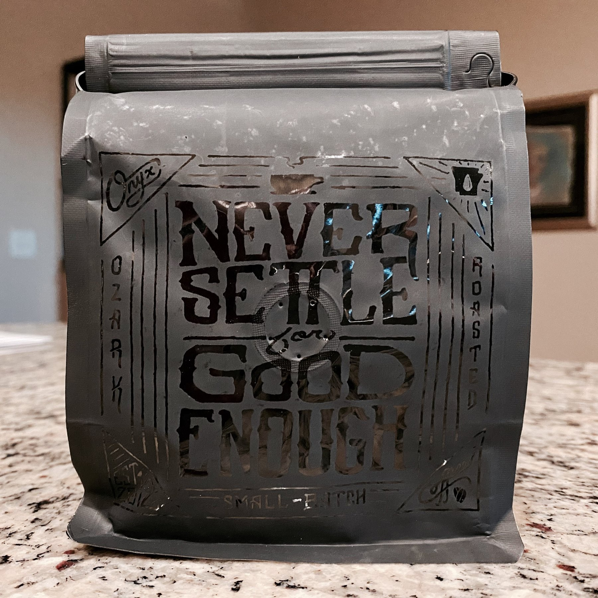
📚 Eager to dig into The Price of Tomorrow, at a time when the US Fed is printing trillions of dollars out of thin air.
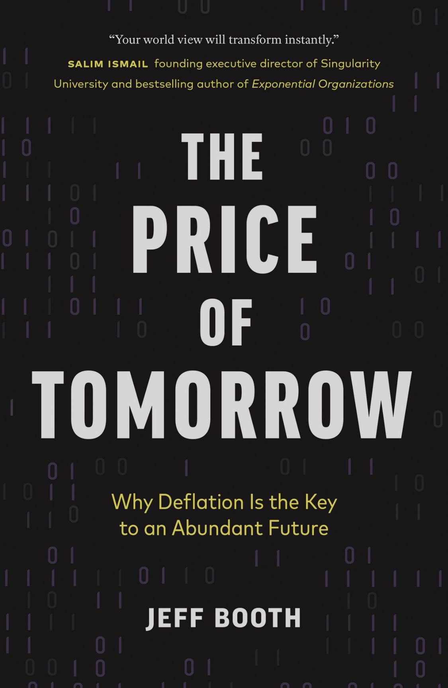
📺 Compliments of HBO Max, I’m back into Doctor Who. While I try to keep my “TV” consumption low, it’s a delightful escape. The downside: they only have through season 11, and I’m down to the last two episodes.
{kind=link}
🎵 It was worth the five-year wait. The Waterfall II from My Morning Jacket is a gem.
After six years of daily use, my original Magic Trackpad gave up the ghost. The replacement has arrived. What a brilliant bit of industrial design.
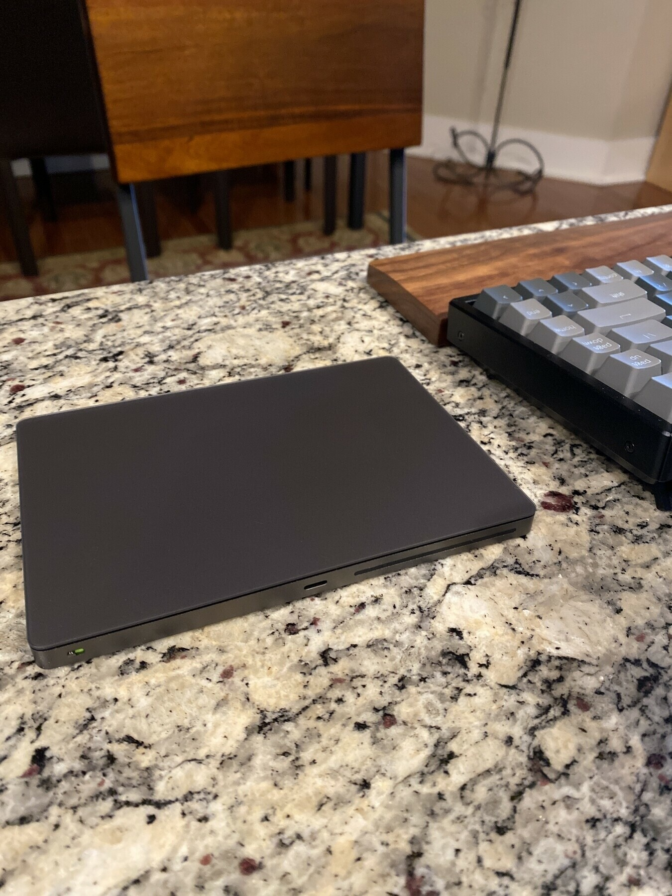🎵 I have Sufjan Steven’s new track, “America”, on repeat today. All 12:30 of it.
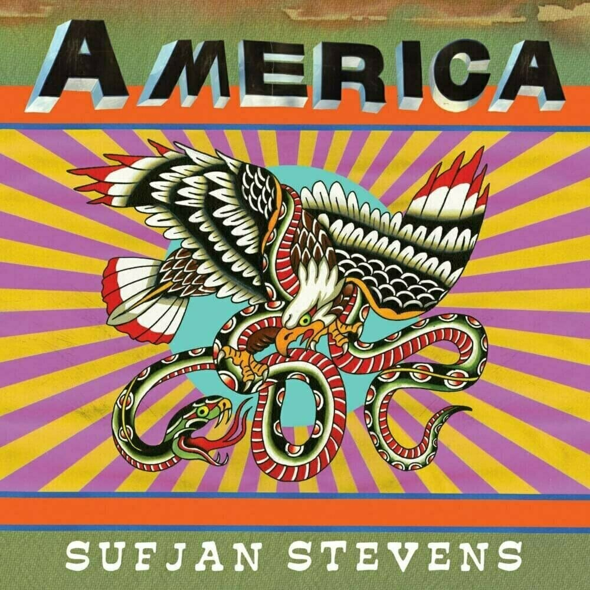
{kind=link}